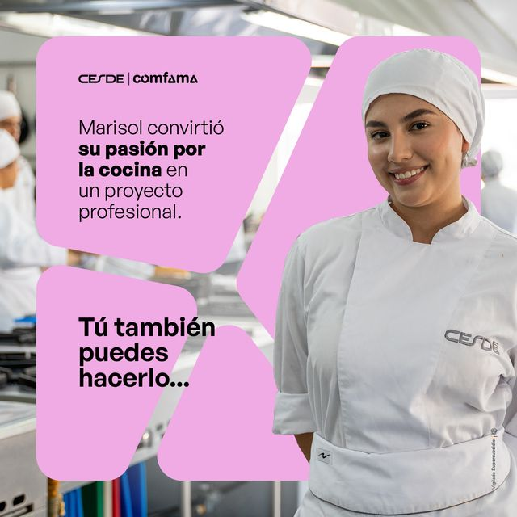
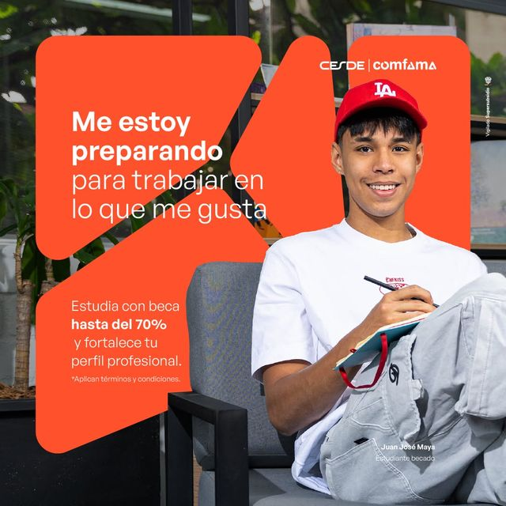

Ritmo del presupuesto
17,0%
$847.517 de $5.000.000 invertidos en 7 de 59 días.
Barra: presupuesto invertidoLínea: 11,9% del tiempo
Va por delante del calendario
Primera semana de la campaña de becas en Meta, del 18 al 24 de noviembre. La campaña lleva a las personas directo al formulario de inscripción de Comfama. Las inscripciones las reporta Comfama y todavía no tenemos esa cifra.
17,0%
$847.517 de $5.000.000 invertidos en 7 de 59 días.
4.003
De 4.878 clics en los anuncios, 82% terminaron en una visita a la página de inscripción.
$212
Medellín es la más barata ($182) y Apartadó la más cara ($314).
Del 18 al 24 de noviembre. El 18 la campaña empezó a las 3:30 p. m.
La línea negra marca el 11,9% del tiempo transcurrido: todas las sedes van por delante.
En amarillo, la sede más barata. Una visita es una persona que abre la página de inscripción.
| Sede | Presupuesto | Invertido | % del presupuesto | Clics | Visitas | Costo por visita | Veces que cada persona vio el anuncio |
|---|---|---|---|---|---|---|---|
| Medellín | $1.000.000 | $175.534 | 17,6% | 1.185 | 967 | $182 | 1,3 |
| Bello | $1.750.000 | $290.690 | 16,6% | 1.743 | 1.465 | $198 | 1,7 |
| Rionegro | $1.750.000 | $294.925 | 16,9% | 1.601 | 1.296 | $228 | 2,2 |
| Apartadó | $500.000 | $86.368 | 17,3% | 349 | 275 | $314 | 2,3 |
| Total | $5.000.000 | $847.517 | 17,0% | 4.878 | 4.003 | $212 | – |
* El 18 la campaña empezó a las 3:30 p. m. (barra rayada).
Miles de pesos por día.
Visitas por día.
Meta reparte la inversión de cada sede entre sus anuncios y se está quedando con el video: concentra el 90% del gasto en Bello, el 88% en Rionegro y el 75% en Medellín.

$652.707
77,0% del gasto
3.311 visitas · $197 por visita

$27.349
3,2% del gasto
110 visitas · $249 por visita
$86.367
10,2% del gasto
275 visitas · $314 por visita

$26.042
3,1% del gasto
96 visitas · $271 por visita

$38.665
4,6% del gasto
147 visitas · $263 por visita

$16.387
1,9% del gasto
64 visitas · $256 por visita
El 94% de la inversión se muestra en Facebook y el 5% en Instagram.
Feed de Facebook e Instagram, Reels, Historias y otras ubicaciones. En amarillo, la más cara; entre paréntesis, la parte del gasto que recibe.
Son propuestas. Ninguna está ejecutada.
Frenar el gasto para que el presupuesto alcance hasta el 15 de enero, sin cambiar piezas ni sedes.
Cuántas llegaron desde los anuncios de CESDE, por sede. Los enlaces traen la marca typeform-source=fbpaidcesde y la sede en utm_term. Primer corte el 1 de diciembre y luego cada dos semanas.
Hoy los cuatro conjuntos terminan el 15 de enero. CESDE confirma la fecha de cierre de la oferta en cada sede para apagar los anuncios a tiempo.
Sumar una o dos piezas de las que ya existen en las otras sedes y mirar si baja el costo por visita.
En una sede, apagar esa ubicación y comparar el costo por visita. Vigilar además cuántas veces ven los anuncios las mismas personas en Rionegro y Apartadó.